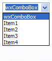
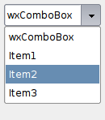

| Version: 2.9.4 |
#include </home/zeitlin/src/wx/github/interface/wx/combobox.h>
 Inheritance diagram for wxComboBox:
Inheritance diagram for wxComboBox:A combobox is like a combination of an edit control and a listbox.
It can be displayed as static list with editable or read-only text field; or a drop-down list with text field; or a drop-down list without a text field depending on the platform and presence of wxCB_READONLY style.
A combobox permits a single selection only. Combobox items are numbered from zero.
If you need a customized combobox, have a look at wxComboCtrl, wxOwnerDrawnComboBox, wxComboPopup and the ready-to-use wxBitmapComboBox.
Please refer to wxTextEntry documentation for the description of methods operating with the text entry part of the combobox and to wxItemContainer for the methods operating with the list of strings. Notice that at least under MSW wxComboBox doesn't behave correctly if it contains strings differing in case only so portable programs should avoid adding such strings to this control.
This class supports the following styles:
wxEVT_COMMAND_TEXT_ENTER (otherwise pressing Enter key is either processed internally by the control or used for navigation between dialog controls). Windows only. The following event handler macros redirect the events to member function handlers 'func' with prototypes like:
Event macros for events emitted by this class:
wxEVT_COMMAND_COMBOBOX_SELECTED event, when an item on the list is selected. Note that calling GetValue() returns the new value of selection. wxEVT_COMMAND_TEXT_UPDATED event, when the combobox text changes. wxEVT_COMMAND_TEXT_ENTER event, when RETURN is pressed in the combobox (notice that the combobox must have been created with wxTE_PROCESS_ENTER style to receive this event). wxEVT_COMMAND_COMBOBOX_DROPDOWN event, which is generated when the list box part of the combo box is shown (drops down). Notice that this event is currently only supported by wxMSW and wxGTK with GTK+ 2.10 or later. wxEVT_COMMAND_COMBOBOX_CLOSEUP event, which is generated when the list box of the combo box disappears (closes up). This event is only generated for the same platforms as wxEVT_COMMAND_COMBOBOX_DROPDOWN above. Also note that only wxMSW supports adding or deleting items in this event. |  |  |  |
| wxMSW appearance | wxGTK appearance | wxMac appearance |
Public Member Functions | |
| wxComboBox () | |
| Default constructor. | |
| wxComboBox (wxWindow *parent, wxWindowID id, const wxString &value=wxEmptyString, const wxPoint &pos=wxDefaultPosition, const wxSize &size=wxDefaultSize, int n=0, const wxString choices[]=NULL, long style=0, const wxValidator &validator=wxDefaultValidator, const wxString &name=wxComboBoxNameStr) | |
| Constructor, creating and showing a combobox. | |
| wxComboBox (wxWindow *parent, wxWindowID id, const wxString &value, const wxPoint &pos, const wxSize &size, const wxArrayString &choices, long style=0, const wxValidator &validator=wxDefaultValidator, const wxString &name=wxComboBoxNameStr) | |
| Constructor, creating and showing a combobox. | |
| virtual | ~wxComboBox () |
| Destructor, destroying the combobox. | |
| virtual int | GetCurrentSelection () const |
| Returns the item being selected right now. | |
| virtual long | GetInsertionPoint () const |
| Same as wxTextEntry::GetInsertionPoint(). | |
| bool | IsEmpty () const |
| IsEmpty() is not available in this class. | |
| bool | IsListEmpty () const |
| Returns true if the list of combobox choices is empty. | |
| bool | IsTextEmpty () const |
| Returns true if the text of the combobox is empty. | |
| virtual void | SetSelection (long from, long to) |
| Same as wxTextEntry::SetSelection(). | |
| virtual void | SetValue (const wxString &text) |
| Sets the text for the combobox text field. | |
| virtual void | Popup () |
| Shows the list box portion of the combo box. | |
| virtual void | Dismiss () |
| Hides the list box portion of the combo box. | |
| virtual int | GetSelection () const |
Returns the index of the selected item or wxNOT_FOUND if no item is selected. | |
| virtual void | GetSelection (long *from, long *to) const |
| Gets the current selection span. | |
| virtual void | SetSelection (int n) |
Sets the selection to the given item n or removes the selection entirely if n == wxNOT_FOUND. | |
| virtual int | FindString (const wxString &s, bool bCase=false) const |
| Finds an item whose label matches the given string. | |
| virtual wxString | GetString (unsigned int n) const |
| Returns the label of the item with the given index. | |
| virtual wxString | GetStringSelection () const |
| Gets the text currently selected in the control. | |
| virtual void | SetString (unsigned int n, const wxString &text) |
| Changes the text of the specified combobox item. | |
| virtual unsigned int | GetCount () const |
| Returns the number of items in the control. | |
| bool | Create (wxWindow *parent, wxWindowID id, const wxString &value=wxEmptyString, const wxPoint &pos=wxDefaultPosition, const wxSize &size=wxDefaultSize, int n=0, const wxString choices[]=(const wxString *) NULL, long style=0, const wxValidator &validator=wxDefaultValidator, const wxString &name=wxComboBoxNameStr) |
| Creates the combobox for two-step construction. | |
| bool | Create (wxWindow *parent, wxWindowID id, const wxString &value, const wxPoint &pos, const wxSize &size, const wxArrayString &choices, long style=0, const wxValidator &validator=wxDefaultValidator, const wxString &name=wxComboBoxNameStr) |
| Creates the combobox for two-step construction. | |
| wxComboBox::wxComboBox | ( | ) |
Default constructor.
| wxComboBox::wxComboBox | ( | wxWindow * | parent, |
| wxWindowID | id, | ||
| const wxString & | value = wxEmptyString, |
||
| const wxPoint & | pos = wxDefaultPosition, |
||
| const wxSize & | size = wxDefaultSize, |
||
| int | n = 0, |
||
| const wxString | choices[] = NULL, |
||
| long | style = 0, |
||
| const wxValidator & | validator = wxDefaultValidator, |
||
| const wxString & | name = wxComboBoxNameStr |
||
| ) |
Constructor, creating and showing a combobox.
| parent | Parent window. Must not be NULL. |
| id | Window identifier. The value wxID_ANY indicates a default value. |
| value | Initial selection string. An empty string indicates no selection. Notice that for the controls with wxCB_READONLY style this string must be one of the valid choices if it is not empty. |
| pos | Window position. If wxDefaultPosition is specified then a default position is chosen. |
| size | Window size. If wxDefaultSize is specified then the window is sized appropriately. |
| n | Number of strings with which to initialise the control. |
| choices | An array of strings with which to initialise the control. |
| style | Window style. See wxComboBox. |
| validator | Window validator. |
| name | Window name. |
wxPerl Note: Not supported by wxPerl.
| wxComboBox::wxComboBox | ( | wxWindow * | parent, |
| wxWindowID | id, | ||
| const wxString & | value, | ||
| const wxPoint & | pos, | ||
| const wxSize & | size, | ||
| const wxArrayString & | choices, | ||
| long | style = 0, |
||
| const wxValidator & | validator = wxDefaultValidator, |
||
| const wxString & | name = wxComboBoxNameStr |
||
| ) |
Constructor, creating and showing a combobox.
| parent | Parent window. Must not be NULL. |
| id | Window identifier. The value wxID_ANY indicates a default value. |
| value | Initial selection string. An empty string indicates no selection. |
| pos | Window position. |
| size | Window size. If wxDefaultSize is specified then the window is sized appropriately. |
| choices | An array of strings with which to initialise the control. |
| style | Window style. See wxComboBox. |
| validator | Window validator. |
| name | Window name. |
wxPerl Note: Use an array reference for the choices parameter.
| virtual wxComboBox::~wxComboBox | ( | ) | [virtual] |
Destructor, destroying the combobox.
| bool wxComboBox::Create | ( | wxWindow * | parent, |
| wxWindowID | id, | ||
| const wxString & | value = wxEmptyString, |
||
| const wxPoint & | pos = wxDefaultPosition, |
||
| const wxSize & | size = wxDefaultSize, |
||
| int | n = 0, |
||
| const wxString | choices[] = (const wxString *) NULL, |
||
| long | style = 0, |
||
| const wxValidator & | validator = wxDefaultValidator, |
||
| const wxString & | name = wxComboBoxNameStr |
||
| ) |
Creates the combobox for two-step construction.
Derived classes should call or replace this function. See wxComboBox() for further details.
Reimplemented in wxBitmapComboBox.
| bool wxComboBox::Create | ( | wxWindow * | parent, |
| wxWindowID | id, | ||
| const wxString & | value, | ||
| const wxPoint & | pos, | ||
| const wxSize & | size, | ||
| const wxArrayString & | choices, | ||
| long | style = 0, |
||
| const wxValidator & | validator = wxDefaultValidator, |
||
| const wxString & | name = wxComboBoxNameStr |
||
| ) |
Creates the combobox for two-step construction.
Derived classes should call or replace this function. See wxComboBox() for further details.
Reimplemented in wxBitmapComboBox.
| virtual void wxComboBox::Dismiss | ( | ) | [virtual] |
Hides the list box portion of the combo box.
Currently this method is implemented in wxMSW, wxGTK and wxOSX/Cocoa.
Notice that calling this function will generate a wxEVT_COMMAND_COMBOBOX_CLOSEUP event except under wxOSX where generation of this event is not supported at all.
| virtual int wxComboBox::FindString | ( | const wxString & | string, |
| bool | caseSensitive = false |
||
| ) | const [virtual] |
Finds an item whose label matches the given string.
| string | String to find. |
| caseSensitive | Whether search is case sensitive (default is not). |
Reimplemented from wxItemContainerImmutable.
| virtual unsigned int wxComboBox::GetCount | ( | ) | const [virtual] |
| virtual int wxComboBox::GetCurrentSelection | ( | ) | const [virtual] |
Returns the item being selected right now.
This function does the same things as wxChoice::GetCurrentSelection() and returns the item currently selected in the dropdown list if it's open or the same thing as wxControlWithItems::GetSelection() otherwise.
| virtual long wxComboBox::GetInsertionPoint | ( | ) | const [virtual] |
Same as wxTextEntry::GetInsertionPoint().
Reimplemented from wxTextEntry.
| virtual int wxComboBox::GetSelection | ( | ) | const [virtual] |
Returns the index of the selected item or wxNOT_FOUND if no item is selected.
Implements wxItemContainerImmutable.
| virtual void wxComboBox::GetSelection | ( | long * | from, |
| long * | to | ||
| ) | const [virtual] |
Gets the current selection span.
If the returned values are equal, there was no selection. Please note that the indices returned may be used with the other wxTextCtrl methods but don't necessarily represent the correct indices into the string returned by GetValue() for multiline controls under Windows (at least,) you should use GetStringSelection() to get the selected text.
| from | The returned first position. |
| to | The returned last position. |
wxPerl Note: In wxPerl this method takes no parameters and returns a 2-element list (from, to).
Reimplemented from wxTextEntry.
| virtual wxString wxComboBox::GetString | ( | unsigned int | n | ) | const [virtual] |
Returns the label of the item with the given index.
| n | The zero-based index. |
Implements wxItemContainerImmutable.
| virtual wxString wxComboBox::GetStringSelection | ( | ) | const [virtual] |
Gets the text currently selected in the control.
If there is no selection, the returned string is empty.
Reimplemented from wxTextEntry.
| bool wxComboBox::IsEmpty | ( | ) | const [virtual] |
IsEmpty() is not available in this class.
This method is documented here only to notice that it can't be used with this class because of the ambiguity between the methods with the same name inherited from wxItemContainer and wxTextEntry base classes.
Because of this, any attempt to call it results in a compilation error and you should use either IsListEmpty() or IsTextEmpty() depending on what exactly do you want to test.
Reimplemented from wxTextEntry.
| bool wxComboBox::IsListEmpty | ( | ) | const |
Returns true if the list of combobox choices is empty.
Use this method instead of (not available in this class) IsEmpty() to test if the list of items is empty.
| bool wxComboBox::IsTextEmpty | ( | ) | const |
Returns true if the text of the combobox is empty.
Use this method instead of (not available in this class) IsEmpty() to test if the text currently entered into the combobox is empty.
| virtual void wxComboBox::Popup | ( | ) | [virtual] |
Shows the list box portion of the combo box.
Currently this method is implemented in wxMSW, wxGTK and wxOSX/Cocoa.
Notice that calling this function will generate a wxEVT_COMMAND_COMBOBOX_DROPDOWN event except under wxOSX where generation of this event is not supported at all.
| virtual void wxComboBox::SetSelection | ( | int | n | ) | [virtual] |
Sets the selection to the given item n or removes the selection entirely if n == wxNOT_FOUND.
Note that this does not cause any command events to be emitted nor does it deselect any other items in the controls which support multiple selections.
| n | The string position to select, starting from zero. |
Implements wxItemContainerImmutable.
| virtual void wxComboBox::SetSelection | ( | long | from, |
| long | to | ||
| ) | [virtual] |
Same as wxTextEntry::SetSelection().
Reimplemented from wxTextEntry.
| virtual void wxComboBox::SetString | ( | unsigned int | n, |
| const wxString & | text | ||
| ) | [virtual] |
Changes the text of the specified combobox item.
Notice that if the item is the currently selected one, i.e. if its text is displayed in the text part of the combobox, then the text is also replaced with the new text.
Implements wxItemContainerImmutable.
| virtual void wxComboBox::SetValue | ( | const wxString & | text | ) | [virtual] |
Sets the text for the combobox text field.
Notice that this method will generate a wxEVT_COMMAND_TEXT_UPDATED event, use wxTextEntry::ChangeValue() if this is undesirable.
wxCB_READONLY style the string must be in the combobox choices list, otherwise the call to SetValue() is ignored. This is case insensitive.| text | The text to set. |
Reimplemented from wxTextEntry.